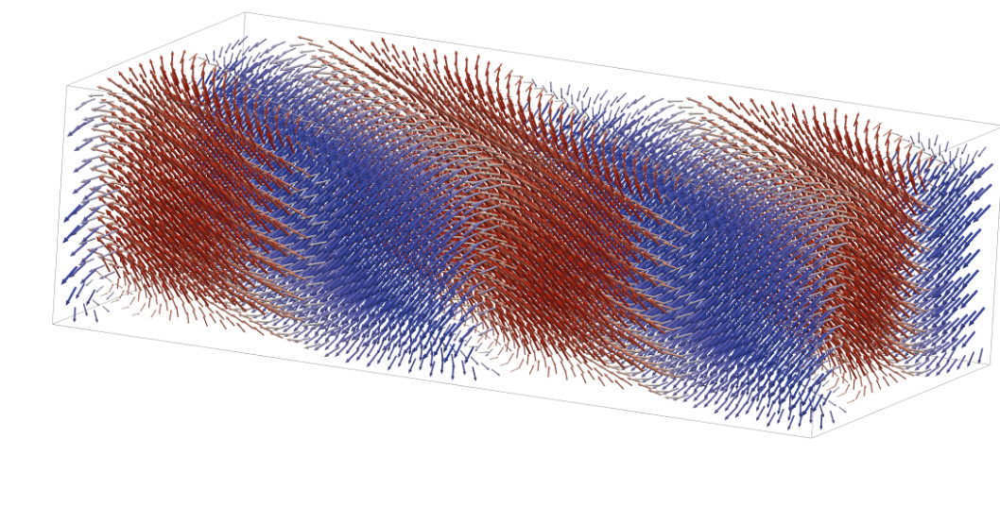

3D Space Visualization
space_profile visualizes 3D vector fields (e.g. displacement fields) as
arrows, powered by PyVista.
Installation
pip install ferrodispcalc[vis]
Quick Start
from ase.io import read
from ferrodispcalc.compute import calculate_displacement
from ferrodispcalc.neighborlist import build_neighbor_list
from ferrodispcalc.vis import grid_data, space_profile
atoms = read("structure.vasp")
nl = build_neighbor_list(atoms, ["Pb"], ["O"], 4, 12, False)
disp = calculate_displacement(atoms, nl)
d_grid, coord = grid_data(atoms, disp, ["Pb"],
target_size=[40, 20, 11],
return_coord=True)
# Grid mode (recommended -- supports gradient coloring)
space_profile(d_grid, color_by="dz", cmap="coolwarm", factor=25.0)
# Or point mode
pts = coord.reshape(-1, 3)
vecs = d_grid.reshape(-1, 3)
space_profile(vecs, coord=pts, color_by="magnitude")
{kind=link}

Example output of space_profile with color_by="dz".
Input Modes
space_profile accepts two data layouts:
Grid mode –
datahas shape(nx, ny, nz, 3). Coordinates are generated automatically from grid indices; thecoordargument is ignored.Point mode –
datahas shape(npoint, 3). You must also passcoordwith the same shape.
Coloring (color_by)
Controls how arrows are colored:
'magnitude'– vector norm'dx'/'dy'/'dz'– single component value'all'– RGB mapping (each component normalized to [0, 1])'gradient'– gradient field magnitude (grid mode only)
cmap sets the matplotlib colormap (default "coolwarm"; ignored when
color_by="all"). clim overrides the colorbar range, e.g.
clim=(-0.2, 0.2).
Region Selection (select)
Display a sub-region by filtering in fractional coordinates. In grid mode,
fractions are derived from grid indices automatically. In point mode, you
must also pass the cell parameter (the 3x3 lattice matrix):
# Grid mode -- no cell needed
space_profile(d_grid, color_by="dz",
select={"x": [0.5, 1.0], "y": None, "z": None})
# Point mode -- cell required
import numpy as np
cell = np.array(atoms.cell)
space_profile(vecs, coord=pts, color_by="dz",
select={"x": [0.5, 1.0], "y": None, "z": None},
cell=cell)
Each key ('x', 'y', 'z') maps to a [lo, hi] range or None
(no filtering on that axis).
Display Options
factor– arrow scale factor (default25.0)projection–"ortho"(default) or"persp"show_bounding_box– draw a wireframe box around the full point cloud (defaultTrue)show_axes– show the XYZ orientation widget (defaultTrue)
Custom Plotter
Pass an existing pv.Plotter to overlay multiple visualizations or
customize the scene. When a plotter is provided, space_profile adds meshes
to it but does not call show(), so you retain full control:
import pyvista as pv
pl = pv.Plotter()
space_profile(d_grid, color_by="dz", plotter=pl)
pl.show()
API Reference
- ferrodispcalc.vis.space_plot.space_profile(data: np.ndarray, coord: np.ndarray | None = None, *, color_by: str = 'dz', cmap: str = 'coolwarm', factor: float = 25.0, projection: str = 'ortho', clim: tuple[float, float] | None = None, select: dict | None = None, cell: np.ndarray | None = None, title: str = '3D Vector Field', show_bounding_box: bool = True, show_axes: bool = True, plotter: pv.Plotter | None = None) pv.Plotter[source]
Plot a 3D vector field using PyVista.
Two input modes are supported:
Grid mode – data has shape
(nx, ny, nz, 3). Coordinates are generated automatically from grid indices and coord is ignored.Point mode – data has shape
(npoint, 3)and coord (also(npoint, 3)) must be provided.
- Parameters:
data (np.ndarray) – Vector data.
(nx, ny, nz, 3)for grid mode or(npoint, 3)for point mode.coord (np.ndarray or None) – Cartesian coordinates
(npoint, 3). Required for point mode, ignored for grid mode.color_by (str) – Coloring strategy:
'magnitude','dx','dy','dz','all'(RGB from components), or'gradient'(grid mode only).cmap (str) – Matplotlib colormap name (ignored when color_by=’all’).
factor (float) – Arrow scale factor passed to
pv.PolyData.glyph.projection (str) –
'ortho'for parallel projection,'persp'for perspective.clim (tuple or None) – Colorbar range
(vmin, vmax). None for automatic.select (dict or None) – Region filter in fractional coordinates. Keys are
'x','y','z'; values are[lo, hi]or None (no filter). In grid mode fractions are computed from grid indices; in point mode cell is required.cell (np.ndarray or None) –
(3, 3)lattice matrix (rows = lattice vectors). Only needed when select is used in point mode.title (str) – Window title.
show_bounding_box (bool) – Draw a wireframe box around the full point cloud.
show_axes (bool) – Show orientation axes widget.
plotter (pv.Plotter or None) – Reuse an existing plotter. A new one is created when None.
- Returns:
The plotter instance (already shown).
- Return type:
pv.Plotter